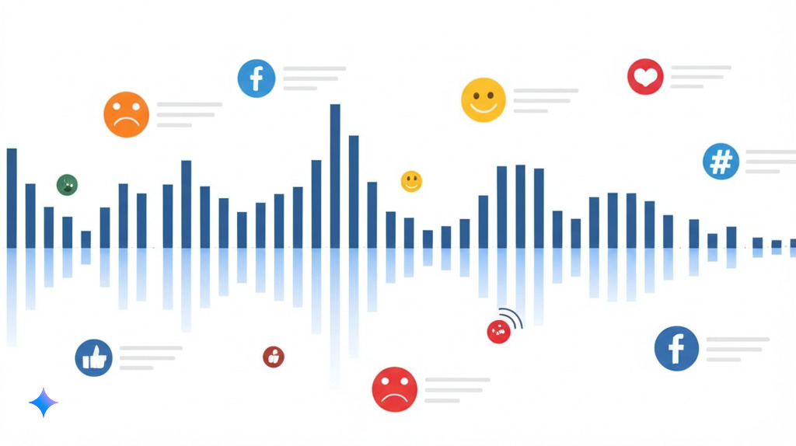

AI Research Trends in Marketing Analytics
From Data to Strategic Insights
AI Research Trends in Marketing Analytics
The AI Revolution in Marketing Analytics
AI is reshaping marketing by enabling unprecedented customer insights:
- Massive growth in data availability
- Advanced analysis of unstructured data
- Enhanced computational power (GPUs, TPUs)
- Wide cloud service adoption (AWS, Azure, Google Cloud)
Marketing Analytics: Evolution from Passive to Proactive
| Stage | Purpose | Example |
|---|---|---|
| Traditional Analytics | Reporting historical data | Monthly sales reports |
| Diagnostic Analytics | Understanding reasons behind trends | Customer churn analysis |
| Predictive Analytics | Anticipating future behaviors | Netflix recommendations |
| Prescriptive Analytics | Recommending optimal actions | Dynamic pricing strategies |
Selected Trends:
- Hyper-Personalization
- Real-Time Predictive and Prescriptive Analytics
- Generative AI for Analytics Communication
- Social Listening
Research Trend 1: Hyper-Personalization
Definition: AI-driven tailoring of experiences based on comprehensive customer data analysis
Key Aspects
- Integration of multi-modal data sources
- Real-time behavioral analysis (Deloitte, 2020)
- Privacy-preserving personalization (cookieless targeting)
- predictive models for consumer behavior (Sipos, 2024)
Case Study: Levi Strauss & Co. (2024)
- ML algorithms analyzing data across 110 countries
- Identified broader demand for looser jeans
- Resulted in 15% increase in loose-fit sales (Kapner, 2024)
Research Trend 2: Predictive & Prescriptive Analytics
Definition: Moving from “what might happen” to “what should be done”
Key Aspects:
- Anticipating Market Dynamics: by predicting possible futures(“Predictive Analytics for Market Trends Using AI,” 2024)
- Suggest Actions: for increased outcome (“Prescriptive Analytics,” 2019)
- Machine learning methods: Decision trees, neural networks
- Operation research: Optimization, simulation
Application in the Real World: Walmart’s Weather-Driven System (2024)
- Integration of weather forecasts with inventory systems
- Proactive pricing adjustments based on weather predictions (Staff, 2024)
Research Trend 3: Generative AI for Analytics Communication
Key Analytics Applications:
- Insights Translation: Converting complex data patterns into natural language reports (Li et al., 2025)
- Automated Analysis: Generating hypotheses and explanations from data anomalies
- Query-Based Analytics: Using natural language to query and visualize complex datasets
- Analytics Democratization: Making data insights accessible to non-technical stakeholders
Research Example: Automated Insight Generation (2023) - AI models analyzing e-commerce data patterns - Generating natural language explanations of trends - Democratization of data analytics (Mohamed Shaffi, 2024)
Research Trend 4: Social Listening & Sentiment Analysis
Definition: Advanced monitoring and analysis of social conversations to extract actionable insights
Key Ideas(“Artificial Intelligence (AI) Applications for Marketing,” 2022):
- Unstructured Data becomes actionable
- Topic modeling finding clusters
- Sentiment analysis beyond “Good / Bad”
- Emotion detection allowing tailored reactions
- Audience Segmentation

Case Study: Barbie Movie & BTS (2023)
- AI-identified fan discussions connecting Ken to BTS member Jimin
- Strategic response through collaborative content
- 295% engagement rate increase (IQ, 2023)
Ethical Considerations in AI Marketing Research
Current Research Focus Areas:
- Algorithmic bias detection
- Explainable AI (XAI)
- Privacy-preserving techniques
- Regulatory compliance frameworks
- Integration of Ethical Considerations into AI application (“Artificial Intelligence and Prescriptive Analytics for Supply Chain Resilience,” 2024)
Research-Practice Gap:
- Academic insights vs. implementation
- Cross-disciplinary ethical frameworks
- Balancing innovation and responsibility
- Impact measurement methodologies
Key Takeaways
- AI is fundamentally transforming marketing analytics
- The field is moving from descriptive to prescriptive approaches
- Research increasingly spans technical implementation and strategic impact
- Ethical considerations are becoming central to research design
- Marketing analytics research requires cross-disciplinary collaboration
Q&A
Future Research Directions
- Explainability - Understanding why models predicted / recommended something
- Cross-modal intelligence - Integrating text, voice, image, and behavioral data (already happening)
- Causal AI in marketing - Moving beyond correlation and A/B testing towards intervention
- Federated learning applications - Preserving privacy while gaining insights
- Emotional intelligence in AI systems - Understanding and responding to consumer emotions
- Sustainability-focused AI applications - Optimizing for environmental impact
- Homomorphic Encryption - Removing need for Data knowlede on Marketer Side
Discussion Questions
- How might these AI advancements influence marketing theory development?
- What methodological challenges arise in researching AI-driven marketing?
- How can academia bridge the gap with industry implementation?
- What ethical frameworks are most appropriate for evaluating AI marketing?
Thank You!
Contact: mail@kay-rottmann.de
References

AI Research Trends in Marketing Analytics - From Data to Strategic Insights | 2025